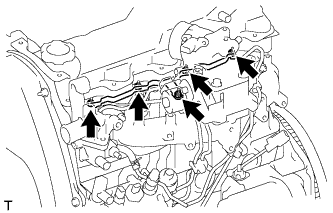

ТОПЛИВНАЯ ФОРСУНКА > СНЯТИЕ |
| 1. DISCONNECT CABLE FROM NEGATIVE BATTERY TERMINAL |
| 2. REMOVE DIESEL THROTTLE BODY |
Remove the diesel throttle body (See page Нажмите здесь).
| 3. REMOVE INJECTION PIPE SET |
 |
Using a union nut wrench, loosen the 8 union nuts of the 4 injection pipes.
| *1 | Union Nut Wrench |
| *a | for Injection Nozzle Side |
| *b | for Injection Pump Side |
Remove the 2 nuts, 2 upper pipe clamps and 4 injection pipes with 2 lower pipe clamps.
| 4. REMOVE NO. 1 GLOW PLUG CONNECTOR |
|  |
Remove the nut, No. 2 glow plug resistor insulator and washer and disconnect the wire harness.
Remove the 4 screw grommets and 4 nuts.
Remove the No. 1 glow plug connector and No. 1 glow plug resistor insulator.
| 5. REMOVE NOZZLE LEAKAGE PIPE ASSEMBLY |
 |
Disconnect the fuel hose from the leakage pipe.
Remove the 4 nuts, leakage pipe and 4 ring packing washers.
| 6. REMOVE NOZZLE HOLDER AND NOZZLE SET |
 |
Using SST, remove the 4 injection nozzles, 4 injection nozzle seats and 4 injection nozzle seat gaskets.